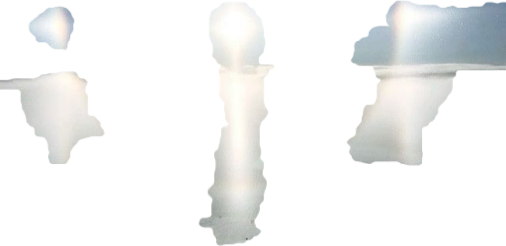
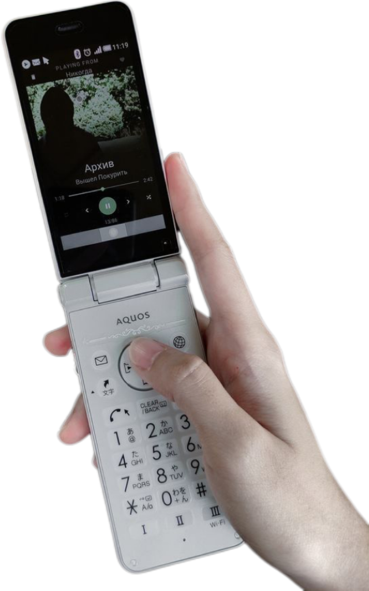
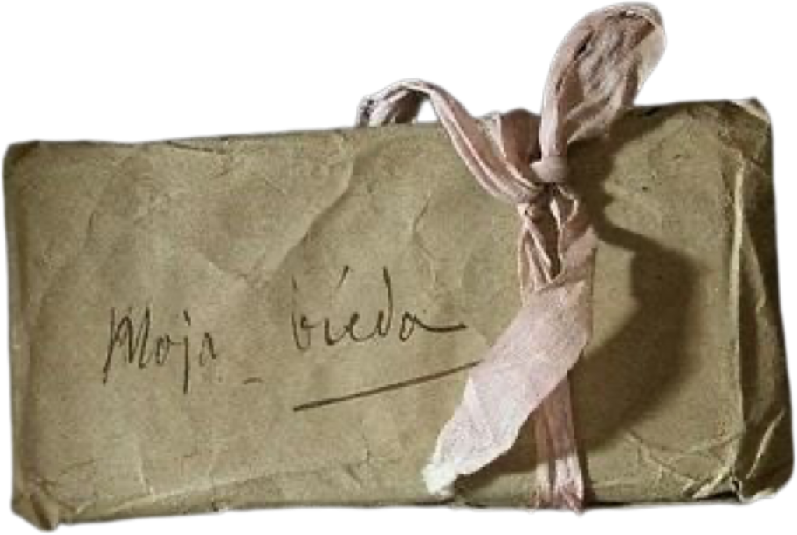
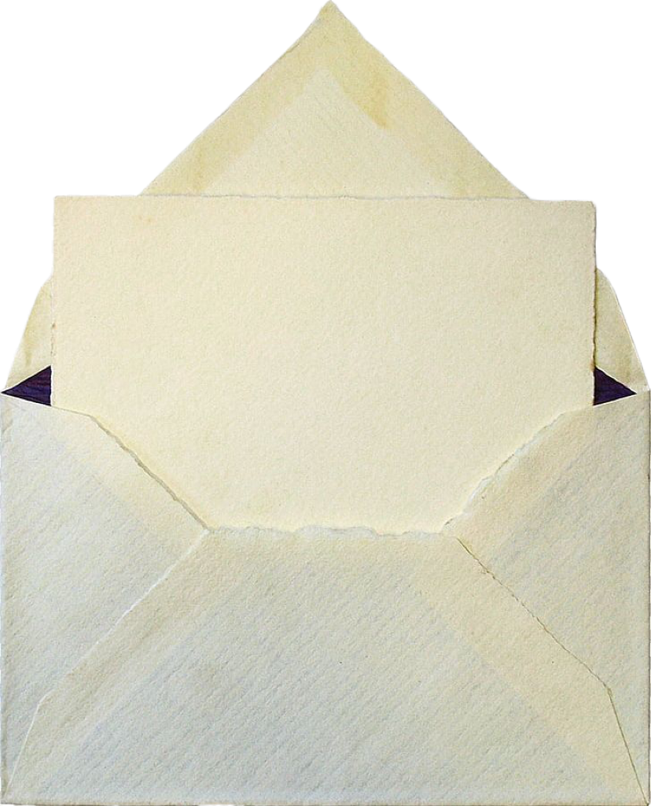
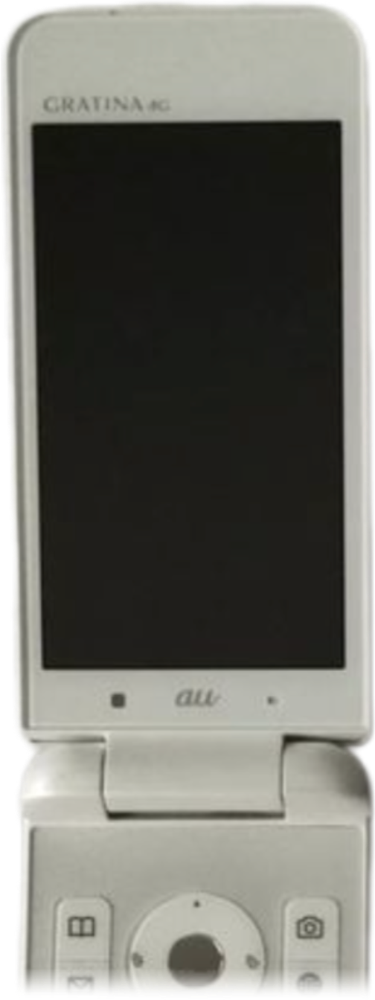

   
你会不会一去不回来？ 我在烟里等你
我想我能想起的只有一去不回来的朋友和一去不回来的暗恋。 你说4年级的暗恋是什么真的喜欢吗？ 肯定不是，但那段回忆我却留恋了6年。 现在忙碌到没时间回忆，我才意识到是自己的成长让记忆真的一去不回来，让人崩溃就如3:33爆发的和声和电杂音。
其实我还没经历过什么 真正的离别：我跟我父亲的离别，往往是短暂几个月的离别。但当然 我们也还是会在线上见面。